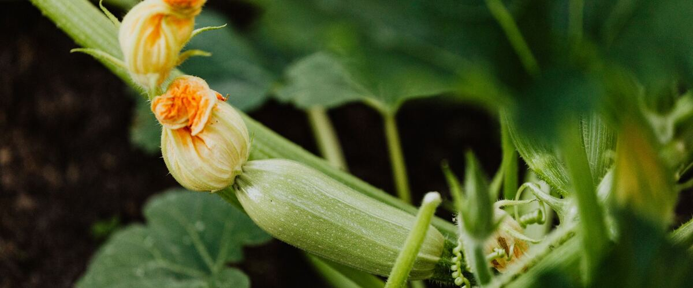

When to plant zucchini and summer squash in Tri-Cities (Pasco, Kennewick, Richland), WA
Plant zucchini and summer squash in the garden in Tri-Cities (Pasco, Kennewick, Richland) May 1–29, either as seeds or as young plants started indoors Apr 3–10.
- Difficulty
- Easy
- Sun
- Full sun
- Spacing
- 3 feet apart
- Planting depth
- 1 inch deep
- Frost
- Killed by frost
- First harvest
- About 55 days after planting
Why these dates
Tri-Cities (Pasco, Kennewick, Richland)'s typical last spring frost is April 27. Frost kills zucchini and summer squash, so planting starts once frost risk drops, around May 1. Keep row cover or a frost blanket handy for the first couple of weeks, since a late frost is still possible.
Columbia Basin and low eastern valleys. Hot, dry summers and quick spring warm-up. Warm crops go in earlier than west of the Cascades, and irrigation matters more than rain.
How to grow zucchini and summer squash in Tri-Cities (Pasco, Kennewick, Richland)
- Start seeds indoors Apr 3–10 in trays or small pots under a grow light or in your sunniest window. Or skip this step and buy young plants (starts) at a garden center.
- Harden off the young plants: about a week before planting, set them outside for a few hours a day, a little longer each day.
- Plant them in the garden May 1–29, 3 feet apart. If you plant seeds instead, sow them 1 inch deep.
- Water deeply once or twice a week rather than a little every day, and mulch once the soil is warm.
- Harvest: Pick zucchini at 6 to 8 inches. Miss a few days and you'll have a baseball bat.
Key numbers
- 60°F min, 70–95°F bestSoil to sprout
- Below 50°FChill damage
- 6.0–7.5Soil pH
- 1 inch a weekWater
- One morning onlyEach flower opens
- 6–8 inchesPick at
How it works
The plant biology behind the advice above, in plain language.
Warm soil first
Squash seeds need soil of at least 60°F to sprout, and they come up fastest at 70 to 95°F. In cold, wet soil they rot before they emerge, which is why squash sown too early in the Northwest often fails. Plants are also damaged by long spells below about 50°F. Wait for warm soil, or start seeds indoors two to three weeks before planting out.
Male and female flowers
Squash plants make separate male and female flowers. Males usually appear first, often for a week or more, and those early blossoms fall off without producing anything. That's normal. Female flowers have a tiny squash at their base.
Each flower opens for one morning only, and bees have to carry pollen from a male to a female. In cool or rainy weather, few bees fly. Poorly pollinated fruit starts to grow, then turns yellow and shrivels from the tip. If that's happening, hand-pollinate: early in the morning, pick a male flower, peel back its petals and brush its pollen onto the center of an open female flower.
Soil, water and feeding
Squash are heavy feeders. Grow them in soil rich in compost with a pH of about 6.0 to 7.5, and give them about an inch of water a week, at the base of the plant. Big leaves often wilt in afternoon heat even when the soil is moist; if they recover by evening, the plant is fine.
Powdery mildew
The white, powdery coating on older leaves in late summer is powdery mildew. Unlike most fungal diseases, it doesn't need wet leaves to spread; it thrives with warm days, cool nights and humid air, which is typical of a Northwest August. Plant mildew-resistant varieties, space plants for airflow and remove the worst leaves. Late in the season it's mostly a sign the plant is winding down.
Harvest and storage
Zucchini is eaten unripe, so pick it at 6 to 8 inches, when the skin is glossy and seeds are still tiny. Letting fruit grow huge signals the plant to slow down, so frequent picking keeps it producing. Store it in the fridge's crisper drawer and use within about a week; it gets pitted and soft if kept cold for too long.
Common questions
When is the last frost in Tri-Cities (Pasco, Kennewick, Richland), WA?
Typically April 27. In 9 years out of 10, frost is over by May 10. These are 1991–2020 NOAA climate normals for Pasco Tri-Cities Airport.
Is it too late to plant zucchini and summer squash in Tri-Cities (Pasco, Kennewick, Richland)?
The spring planting window runs through May 29. Later plantings may not have time to produce before the first fall frost, which usually arrives around October 11.
When should I start zucchini and summer squash from seed indoors in Tri-Cities (Pasco, Kennewick, Richland)?
April 3 to April 10, which is 4 to 3 weeks before the May 1 planting date. Or buy young plants at a garden center instead.
Why are my zucchini rotting at the tip?
Usually poor pollination. When fruit isn't fully pollinated it starts to grow, then yellows and rots from the blossom end. Cool, rainy weather keeps bees away. Hand-pollinate in the morning with a male flower, or wait for warmer weather.
Why does my squash have flowers but no fruit?
Squash produce male flowers first, often for a week or more, and those don't make fruit. Female flowers, with a tiny squash at the base, follow. If both are present and fruit still doesn't set, there may not be enough bees, and hand-pollinating helps.
What is the white powder on my squash leaves?
Powdery mildew, which is common in late summer. Remove the worst leaves, keep watering at the base, and choose resistant varieties next year. Plants usually keep producing for weeks.
Also plant in Tri-Cities (Pasco, Kennewick, Richland) around the same time
Planting dates for zucchini and summer squash in nearby areas
- Pendleton, OR May 1–29
- The Dalles, OR May 1–29
- Yakima, WA May 8 – Jun 5
- Wenatchee, WA May 1–29
- Walla Walla, WA May 1–29
- Moses Lake, WA May 1–29
Full planting calendar for Tri-Cities (Pasco, Kennewick, Richland) · Zucchini and summer squash in every city